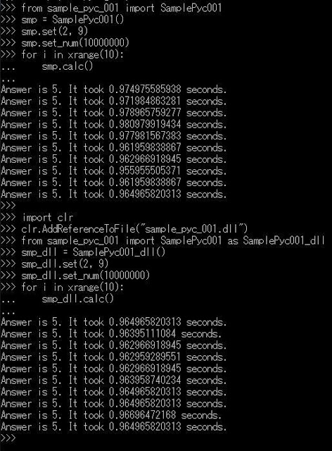
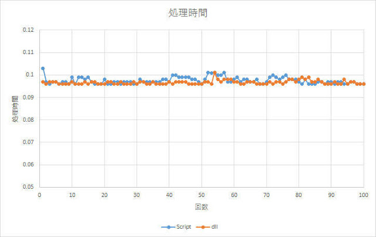

IronPythonのモジュールをdll化し、それを使ってみます。
私はIronPython2.7.11（64bit）を使用しますので、「IronPython Compiler（ipyc.exe）」を利用してdll化します。リンク先にオプションの説明もあるので確認しておくことをお勧めします。
2.7.5以前のバージョンでは、pyc.pyを使う場合もあります。
IronPython2.7.11のデフォルトのインストール先はC:\Program Files\IronPython 2.7フォルダです。
C:\IronPython27などUACを回避するようなフォルダを指定すると使い勝手が良くなります。以降、C:\IronPython27にインストールされていることを想定して話を進めます。
dll化の手順
サンプルスクリプトで説明します。
(1) サンプルスクリプトを用意しました。こちらから、sample_pyc_001.zipをダウンロードして、展開してください。
(2) 展開したsample_pyc_001.pyをIronPythonのフォルダのLibフォルダにコピーしてください。
(3) DOSプロンプトを起動し、以下を実行し、sample_pyc_001.dllを作成します。※1
cd "C:\IronPython27\Lib"
..\ipyc.exe /target:dll /platform:x64 sample_pyc_001.py※1
2.7.5において「pyc.py」を利用する場合は以下の通りです。
IronPythonのフォルダを、「C:\IronPython27」とします。
cd "C:\IronPython27\Lib"
..\ipy64.exe ..\pyc.py /target:dll /platform:x64 sample_pyc_001.pydllの実行
(1) IronPython Consoleを起動します。
(2) SamplePyc001モジュールは、設定された2変数の平均計算を設定された回数実行します。
・SamplePyc001.set()で、2変数の設定
・SamplePyc001.set_num()で、回数の設定
・SamplePyc001.calc()で、実行
pyファイルから実行する場合の例。
from sample_pyc_001 import SamplePyc001
smp = SamplePyc001()
smp.set(2, 9)
smp.set_num(1000000)
for i in range(100):
smp.calc()dllファイルから実行する場合の例。
import clr
clr.AddReferenceToFile("sample_pyc_001.dll")
from sample_pyc_001 import SamplePyc001 as SamplePyc001_dll
smp_dll = SamplePyc001_dll()
smp_dll.set(2, 9)
smp_dll.set_num(1000000)
for i in range(100):
smp_dll.calc()(3) こちらが私の環境での結果（calcを10回）です。

calcを100回実行した時の比較です。

ひとこと
今回のサンプルにおいては、処理時間が格段に速くなることはありませんでした。しかし、処理時間の安定性において、dllファイルから実行する方が良いようにも見えます。
あと、こちらのサイトを参考にすれば、dllをc#から利用することもできるはずです。
IronPython 3.4においても、上と同じような手順で問題ありません。ただし、2.7の時は「xrange」を、3.4の時は「range」を使うと良いでしょう。（3.4に「xrange」はありません）サンプルでは、両方で動作するように「range」を利用しています。